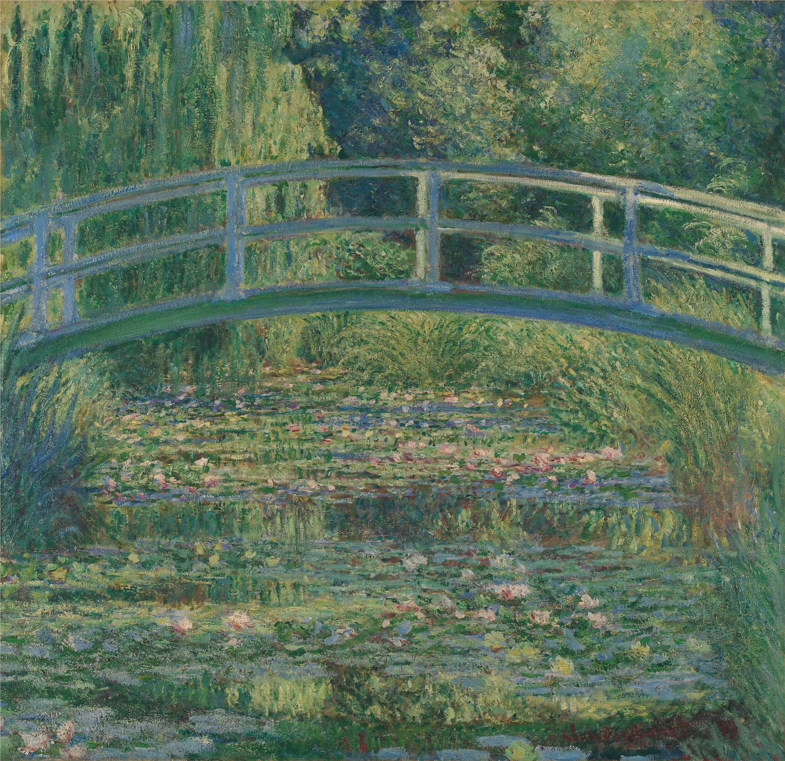

1899年，莫奈已经不满足于外出寻找风景了——他直接把风景亲手造了出来。他在吉维尼买下一块洼地，引来一条支流，挖成池塘，种满从日本进口的睡莲，又照着自己收藏的浮世绘版画，搭了一座漆成浅蓝灰色的木桥。这幅画里，几乎看不到天空，看不到岸，只剩一整片绿色的和声——莫奈自己就把这张画题为《睡莲池，绿色和声》(Le Bassin aux nymphéas, harmonie verte)。
这张画最激进的地方，是莫奈几乎删除了地平线。传统风景画总要留一条线告诉你哪里是天、哪里是地，他却把这条线连同天空一起藏了起来：画面被一座拱桥从上到下切成两半，桥面之上是柳枝低垂、树影层叠；桥面之下，是睡莲铺满的水面与树影的倒影——上下几乎对称，你甚至分不清哪一半是"真实"，哪一半只是水中的镜像。
视角被特意压低、拉近，像是站在桥边俯身看水，而不是站在远处眺望风景；画框也几乎方正，四边都被植物与水面填满，没有留出任何"喘息"的空白，让人一进入画面就被整个包裹住。
莫奈给这张画起的法文原名，直接点出了配色逻辑——"绿色和声"（harmonie verte）。整幅画建立在一组类似色（analogous colors）体系上：从偏黄的柳绿、到中间调的苔绿、再到偏蓝的深潭绿与桥身的灰蓝色，全都落在色环上相邻的一段区间里，几乎没有强烈的对比色来打断视线，所以整张画看起来极其和谐，甚至有点催眠。
真正的"点睛"色，是水面上那几笔粉白与浅红的睡莲——面积小到几乎可以忽略，却因为是全画唯一偏暖、偏亮的颜色，一下子就把视线钉在了水面上。这和很多"性冷淡风"或莫兰迪式配色的逻辑完全一致：大面积同色系打底，极少量对比色/暖色做点缀，克制但不单调。
莫奈用的是印象派招牌的"断续笔触"（broken brushwork）——颜料不是被涂匀抹平的，而是一笔一笔、带着不同方向和厚薄的色块并置在画布上，靠观者的眼睛在一定距离外自动把它们"混合"成水波、树影和光斑。这也是印象派敢用近乎潦草的笔法、却依然让人觉得"像"的秘密。
更关键的技法在于水面本身：莫奈把水中倒影和水面本身画得几乎一样清晰、一样"实在"，你分不清哪里是睡莲的叶子，哪里是柳树在水里的影子——这种"拒绝分清虚实"的画法，后来被艺术史学家认为是西方绘画走向抽象的重要起点之一：当画家开始把"反射"和"实物"画得同样真实，具象与抽象的边界就开始松动了。
这张画最打动人的地方，或许不在画布上，而在画布之前：这个花园根本不是莫奈"找到"的风景，而是他自己一手设计、挖掘、种植出来的。他在吉维尼买地、雇园丁、从日本引进睡莲品种，又照着自己收藏的浮世绘版画定制了这座木桥——换句话说，他先把"想画的风景"造出来，再回过头去画它。这是一种很少见的创作自由：大多数画家在寻找题材，莫奈却先把题材种在了自己家后院。
从1899年这批《日本桥》系列开始，他此后二十多年几乎只画这一方池塘，一步步舍弃地平线、舍弃岸边，最终画出晚年那些占满整面墙、近乎抽象的巨幅《睡莲》组画（现藏巴黎橘园美术馆）。眼前这张相对"克制"的早期版本，恰好让我们看到这场漫长实验的起点——桥还在，还留着一点点具象的锚点，还没有完全飘进水面。
克劳德·莫奈（Claude Monet，1840–1926），法国画家，印象派运动的核心创始人之一——"印象派"（Impressionism）这个名字本身，就来自他1872年的作品《日出·印象》。1883年，莫奈定居法国吉维尼（Giverny），并在此后四十多年里持续扩建自己的花园与睡莲池，这方水塘后来成为他晚年最重要的创作母题，直至去世前几乎从未间断。
莫奈已故逾九十年，原作早已进入公有领域；这幅《睡莲池》现藏英国国家美术馆（National Gallery, London），本文所用图片来自Wikimedia Commons的公有领域数字化档案。